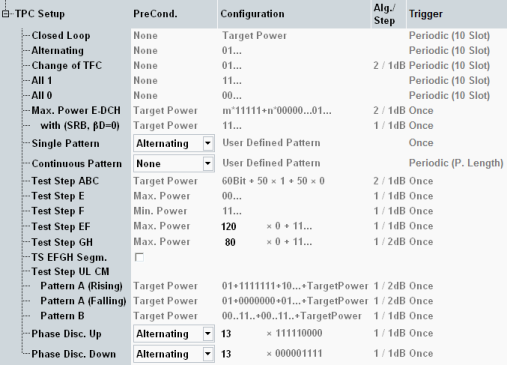

The following TPC setups are available.

This table lists all defined TPC pattern configurations. One of these configurations is active (see "Active TPC Setup"). Most settings are predefined and cannot be modified (are grayed out).
For the setup "Max. Power E-DCH", two lines are displayed. The first one applies to test mode RMC+HSPA (subtest 1 to 4), the second line to test mode HSPA (subtest 5).
For the setup "Test Step UL CM", three lines are displayed. The configuration of each pattern is displayed in a separate line.
For the setup "DC HSPA In-Band Emission", the configuration for both carriers is displayed in two lines.
- "PreCond." defines or displays a precondition that the UE is commanded to before the pattern can be executed. For test steps E, F, G and H segmentation can be enabled.
- "Configuration" defines or displays the TPC pattern.
- "Alg./Step" displays the power control algorithm and the TPC step size if they are fixed for the TPC pattern.
- "Trigger" displays the trigger event for generation of a trigger pulse that can be evaluated by a measurement application of the R&S CMW.